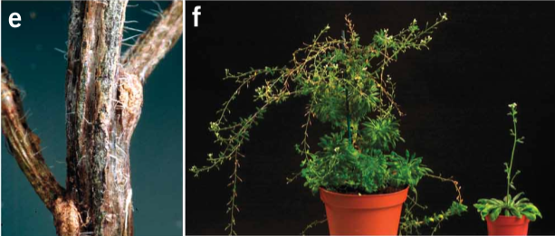
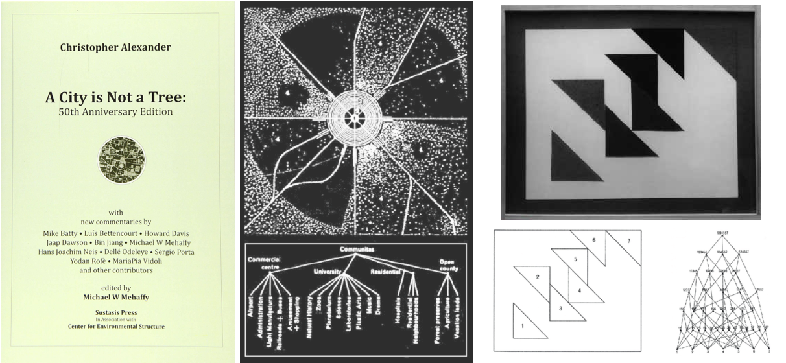

0a.io: Everything is broken the same way nothing is
english
deutsch française svenska український русский 日本語 中文
1.
From the seeds in the soil to the stars above
Everything has been here since the beginning
Everything - including yourself - is made of the same stuff
You too have been here since the beginning
The universe is one single organism
It dances and sings with ever-changing forms
We are all reconstruction of reconstruction
2.
From an emergentistic perspective, reconstruction can be dissected as an interplay between two fundamental properties in our world:
-
emergence (a fundamental property of complex systems)
-
humanly conceived forms
Suppose you are in a garden with some arabidopsis. You use proteins to remove from them genes that control flower development, and give them more light than usual. By doing so, you've restructured the emergence process on a cellular level, and the arabidopsis would grow a tree-like stem never otherwise seen in the species.
It has reconstructed more tree-ish properties, at least micro-structrually.

At the left we see a close-up of the woody stem of a metamorphosed arabidopsis. The image at the right compares a metamorphosed arabidopsis with a normal flowered arabidopsis.
Images are from Melzer, Siegbert, et al. “Flowering-time genes modulate meristem determinacy and growth form in Arabidopsis thaliana.” Nature genetics 40.12 (2008). Also referenced in Georgia Ray's "There’s no such thing as a tree phylogenetically".
Humans tend to give things forms. When we see something resembling a tree,
without saying “this is a tree,” in the mind's eye surfaces the notion of a tree.
If that is a tree inside a painting,
the surrealists may say “ce n'est pas un arbre.”
A French architect who overheard it may think of
Christopher Alexander's 1965 essay
A City Is Not a Tree.
And so imageries of forms dance along the rhythm at which context changes.

Here, a tree refers to an abstract structure with branches (as shown in the middle, where a city is broken down into sub-categories in a tree).
A City Is Not a Tree, widely regarded as a landmark paper in modern design, is a critique on
pattern-matching-based thinking. It argues that trees will never be as all-encompassing as more intricate but higher-cost-to-visualize structures like semi-lattice.
At the right is a semi-lattice assessing relations among triangles in a painting.
Illustrations are taken from A City Is Not a Tree: 50th Anniversay Edition. Painting in photograph is No. 6112 by Simon Nicholson, taken from "Systems in Play: Simon Nicholson's Design 12 Course, University of California, Berkeley, 1966".
The same way that architects take glamour in figuring out complex systems that occupy the human world,
surrealists are more concerned with the absurdity of reality and dreams.
While an architect, enlightened by reading A City is Not a Tree, may be enticed to reconstruct their own thoughts as they discern systems at bird's-eye view, a surrealist on the other hand
may be tempted to relax the defintion of reconstruction above.
Perhaps we should encompass none-humanly conceived forms too, thought the surrealist. And so our new definition becomes:
...reconstruction can be dissected as an interplay between:
-
emergence (a fundamental property of complex systems)
-
all forms (humanly and none-humanly conceived)
Voila! By doing so, we can start to see reconstruction all around us, most of which are inconceivable.
From every sense we experience to every division of our cells, from every supernova of dying stars to every vibration of molecules ever existed...
systems of no known origins and of no known names are being reconstructed in ways we do not understand.
In ancient Eastern philosophy we call it the Dao. In Kantianism we dub it the Noumenal world.
Or as Stephen Hawking (after proclaiming that philosophy is dead in 2010) would put it, side-effects of Model-dependent Realism.
Among them, perhaps the greatest and most mysterious of all, is the perpetual, constant reconstruction of the present in Planck time,
giving the appearance of seamless continuity as the conscious mind navigates and experiences the world.
Planck time (roughly 10-44 of a second, derived from Heisenberg's Uncertainty Principle) is the length of time at which no smaller meaningful length can be theoretically measured. It is conjectured that the structure of time breaks down in smaller intervals of Planck time.
But this is not a simulation. To describe reality in such way would betray the words per se, for the word simulation invokes a sense of none-"realness".
My love, this is as real as it gets! This is a record player. We're in
the music right now.
3.
When the character Love(爱; ài) has no heart(心; xīn) in it*
,
will the exhibition titled "Shrine爱 1.0" have actual love in it?
Shrine爱 1.0 is an exhibition exploring reconstruction of "spirituality" in terms of worldbuilding.
* Love was traditionally written with a 心 in it: 「愛」。
The variance 爱 as a replacement for 愛 was proposed in the 1955 Chinese Character Simplification Scheme
by the State Council of the People's Republic of China to encourage literacy.
In every new world being built we find traces of the old worlds,
every imagined world traces of the empirical,
every theological world traces of the innate, subtle, spiritual...
The Chinese word World (世界; shì jiè) was originally a Buddhist term
coined by 300BCE monk Kumārajīva to mean
"a space where living things live and revolve around,
wherein a Buddha spreads his teachings".
In Buddhist cosmology, there are infinitely many universes,
each a collection of a billion Worlds.
Within each universe, there is a Buddha who traverses these Worlds
to spread his teachings for the love of all sentient beings, so everyone can reach enlightenment.
Aside from humans, sentient beings include animals, as well as nature spirits, demons, deities...
Some may achieve enlightenment in their current lifetime, some may be able to do so in the next lifetime, and so on. It's all a learning experience.
In the Buddhist multiverse, the omnipotent God (in the conception of the word
theos)
is then the structural complexity of the multiverse,
which transcends and governs everything within.
In every world conceivable by the mind are glimpses of the Holy Spirit.
Be it a mythical world, an imagined world, a digital world, a mathematical model, or the world as one knows about
through stories, beliefs, and interactions.
Existing within the structural complexity of every world is a reflection of the spirituality
in every object, entity, and organism around us,
in the sense that they, when grouped together and positioned in a specific way, have the potentials
to bring forth qualia that goes beyond
the undertones of cultures and languages.
A shared experience that is primitive and shamanistic in nature that which we do not understand.
Shrine爱 1.0 is an attempt to venerate and reconstruct such "spirituality"
through the juxtaposition of technologies and senses in a mix of
worlds. These are worlds arose from emergence among, as well as individually, in
selected works by five artists of different disciplines.
Can a humble art exhibition restore in each of its visitors a little sense of "spirituality" in this (post)modern world characterized largely
by stress and stress-coping mechanisms?
- - -- - - -- -- -
Stay tuned for more logs as we prepare for our first exhibition!
Archy Will He,
19th May 2022
- - -- - - -- -- -
"0a.io: Everything is broken the same way nothing is." is a series of collaborative performance-exhibitions exploring the concept of reconstruction. It begs the question: What does it mean to be conscious?
Coming up:
0a.io shanghai - 《Shrine爱 1.0》
2022/07/????
0a.io shanghai - 《Shrine爱 1.0》workshops:
- Contemporary dance workshops 2022/07/????
- Wood carving workshops 2022/07/????
- VR development workshops 2022/07/????
- Generative art & Python workshops 2022/07/????